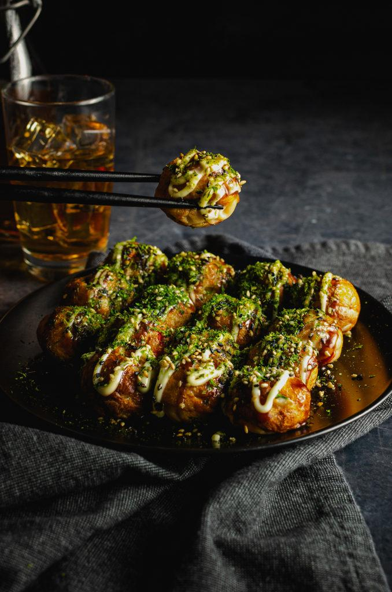

Takoyaki

What is Takoyaki?
Takoyaki is a beloved Japanese street food – a spherical snack made of batter filled with octopus pieces,cooked to a crispy golden brown on the outside, and served with savory toppings like bonito flakes, takoyaki sauce, and mayo.
Ingredients
For the batter
- 450 ml dashi stock
- 140 g all purpose flour
- 10 g cornstarch
- 1 egg
- 100-140 g octopus pieces chopped into 2 cm pieces
- 1/2 cup spring onion chopped
- 1-2 tbsp pickled ginger chopped
- 1/2 cup tenkasu
For the toppings
- Takoyaki or Okonomiyaki sauce
- kewpie or usual mayonnaise
- seaweed flakes
- bonito flakes
- Salt
- Parmesan
- Curry powder
- Cheese
Instructions
Make the Batter
- In a large mixing bowl, combine 1 cup all-purpose flour (plain flour), 2 tsp baking powder, and ½ tsp Diamond Crystal kosher salt and whisk it all together.
- Add 2 large eggs (50 g each w/o shell), 1 tsp soy sauce, and 1½ cups dashi (Japanese soup stock).
- Whisk it all together until well blended and transfer the batter to a measuring cup with a handle (or any other pitcher with a spout for easy pouring.)
Prepare the Filling
- Grind ¼ cup katsuobushi (dried bonito flakes) into a fine powder. Set aside; we‘ll use this powder when we‘re cooking the takoyaki.
- Cut 2 green onions/scallions into fine slices and mince 1 Tbsp pickled red ginger (beni shoga or kizami beni shoga).
- Cut 4.2 oz octopus sashimi (boiled octopus) into ½-inch (1.3-cm) bite-sized pieces; cut into smaller pieces for kids so they can chew it more easily. I use the rangiri cutting technique.
Cook the Takoyaki
- Heat the takoyaki pan to 400ºF (200ºC) over medium heat. Use a brush to generously grease the pan‘s rounded chambers and flat top surface with 2 Tbsp neutral oil. When smoke starts to rise, pour the batter to fill the chambers. It’s okay to slightly overfill the cavities. In the next steps, the batter will likely overflow as you add more ingredients to it.
- Add 1–3 octopus pieces, depending on their size, to each chamber and sprinkle on top the katsuobushi powder that you ground earlier.
- Sprinkle ⅓ cup tenkasu/agedama (tempura scraps), the green onion slices, and the chopped pickled red ginger on top. After 3 minutes or so, when the batter on the bottom has set and is slightly crisp, use skewers to break the connected batter between each chamber. Then, rotate each piece 90 degrees (a quarter turn) toward the bottom of the pan, stuffing the connected dough back into the ball as you turn it. The uncooked batter will flow out from inside to create another side of the ball. After you finish turning them, set a timer for 4 minutes.
- After 4 minutes, rotate them again, starting with the first ball: Turn each takoyaki another 90 degrees toward the bottom of the pan so the remaining uncooked batter pours out into the chamber to complete the ball shape. Home takoyaki griddles don‘t distribute heat evenly, so it’s a good idea to swap the balls around to different chambers so they brown evenly. After turning and cooking for another 4 minutes, they are done.
- Transfer them onto a plate and drizzle ½ cup takoyaki sauce and Japanese Kewpie mayonnaise on top. Finish the dish with a sprinkling of katsuobushi (dried bonito flakes) and aonori (dried green laver seaweed) and a side of pickled red ginger (beni shoga or kizami beni shoga). Serve immediately. (But, be careful—they‘re VERY hot inside!)
- You can keep the leftovers in an airtight container and store in the refrigerator for 3 days or in the freezer for 2–3 weeks.